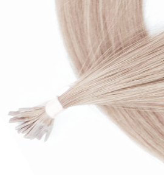

Feel this volume! Enjoy the weight and natural brilliance of proven Russian hair strands transparently integrated to your own hair using extra-tiny keratin capsules. We rejected dozens of suppliers before we managed to find this combination: healthy and soft Slavic hair from European part of Russia and Ukraine and durable and almost invisible capsules of quality keratin.
Pre-bonded Russian hair extensions are applied using the finest keratin capsules able to deliver volume to your own hair for up to 16 weeks before correction. Wash, comb, and style at will – Elizé keratin hair extensions survive much longer and are small enough to be applied even on delicate zones such as temples. Choose between classic 0.4 to 0.6 mm capsules and even more benign I-Tip keratin for cold fusion that also comes with extremely small-sized rings. The tiny size of keratin tips also contributes to more delicate application, even safer than it would be with typical cold fusion procedures.
The tiny size of keratin tips also contributes to more delicate application, even safer than it would be with typical cold fusion procedures.
Elizé keratin Russian hair extensions are a perfect blend of featured slavic hair and top notch keratin resulting in awesome hairstyle that lasts… and lasts, and lasts. Order now or sign up for a free sample.